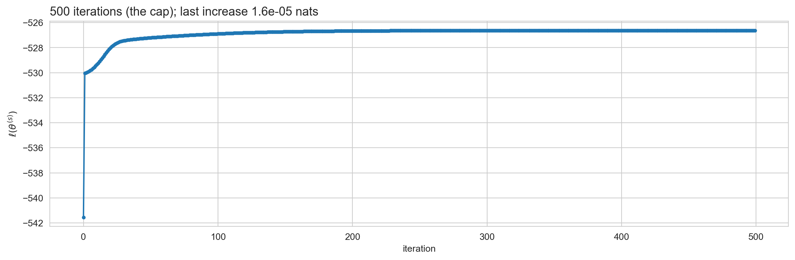

\(T\) steps, each a \(K \times K\) matrix-vector product: \(O(TK^2)\).
Question 1, the likelihood, is already answered, and we have not touched a single path.
In matrix form, with \(\alpha_t\) and \(B_t\) as row vectors of length \(K\): \(\alpha_t = (\alpha_{t-1} A) \odot B_t\), where \(\odot\) is the elementwise product, \((u \odot v)_k = u_k v_k\).
Numerical stability
\(\alpha_t(k)\) is a joint probability of \(t\) observations. It decays geometrically and underflows within a few hundred steps.
The standard fix is to normalize as we go. Define \(c_t := p(y_t \mid y_{1:t-1})\) and
\(\hat{\alpha}_t\) is the filtering distribution: an interpretable quantity that sums to one, rather than a vanishing number.
The recursion becomes predict, then update: \(\hat{\alpha}_t \propto (\hat{\alpha}_{t-1} A) \odot B_t\), and the normalizer at step \(t\) is exactly \(c_t\).
The normalizers give the likelihood for free: \(\;\log p(y_{1:T}) = \sum_{t=1}^{T} \log c_t\).
The alternative is to run everything in log space with logsumexp, as we did for the mixture model.
Same cost, run right to left. Note \(\beta\) is a conditional likelihood, not a distribution over states: it need not sum to one, and it needs the same rescaling as \(\alpha\).
Putting the two passes together
Because \(y_{1:t}\) and \(y_{t+1:T}\) are conditionally independent given \(z_t\):
On paper first, then typed up in a Quarto document. This is the week’s lab exercise.
Starting from the definition \(\xi_t(j,k) = p(z_{t-1}=j, z_t=k \mid y_{1:T})\), show that \[
\xi_t(j,k) = \frac{\alpha_{t-1}(j) \, A_{jk} \, B_t(k) \, \beta_t(k)}{p(y_{1:T})}.
\]
Sum \(\xi_t(j,k)\) over \(j\) and show that you recover \(\gamma_t(k)\).
Repeat part 1 with the rescaled quantities \(\hat\alpha_{t-1}(j) = p(z_{t-1}=j \mid y_{1:t-1})\) and \(\hat\beta_t(k) = \beta_t(k) / p(y_{t+1:T} \mid y_{1:t})\), and show that \[
\xi_t(j,k) = \frac{\hat\alpha_{t-1}(j) \, A_{jk} \, B_t(k) \, \hat\beta_t(k)}{c_t}, \qquad c_t = p(y_t \mid y_{1:t-1}).
\]
Goals
Generate rolls from a casino you designed, and compare their likelihood under two models with the forward algorithm.
Write down the complete data log likelihood of an HMM and its maximizer when the states are known.
Show that the expected complete data log likelihood depends on the posterior only through \(\gamma\) and \(\xi\), and hence that forward-backward is the whole E-step.
Derive the M-step for \(\pi\), \(A\) and two emission families, and recognize them in the code.
Run Baum-Welch on your rolls and judge whether it recovered your choices.
Read the results critically: restarts, local optima, sample size, and priors.
Your own casino
Monday’s code, which you will need
setup: imports, colours, a table helper, the data
import numpy as npimport pandas as pdimport matplotlib.pyplot as pltimport seaborn as snsfrom scipy.stats import normfrom IPython.display import Markdowndef md_table(df, index=False):"""Show a DataFrame as a markdown table so it matches the hand-written tables.""" cell =lambda v: str(v).replace("|", "\\|") head = ([cell(df.index.name or"")] if index else []) + [cell(c) for c in df.columns] rows = [([cell(i)] if index else []) + [cell(v) for v in r]for i, r inzip(df.index, df.astype(object).to_numpy())] lines = ["| "+" | ".join(head) +" |", "|"+"---|"*len(head)] lines += ["| "+" | ".join(r) +" |"for r in rows]return Markdown("\n".join(lines))sns.set_style("whitegrid")INK, M1, M2, M3 ="#12355b", "#2a6f97", "#bb3e03", "#4c956c"faithful = sns.load_dataset("geyser")kind = faithful["kind"].to_numpy()dur = faithful["duration"].to_numpy()casino = pd.read_csv("data/casino.csv")x_cas, y_cas = casino["x"].to_numpy(), casino["y"].to_numpy()
def forward(logB, pi, A): T, K = logB.shape B = np.exp(logB) alpha, c = np.zeros((T, K)), np.zeros(T) a = pi * B[0] c[0] = a.sum(); alpha[0] = a / c[0]for t inrange(1, T): a = (alpha[t-1] @ A) * B[t] c[t] = a.sum(); alpha[t] = a / c[t]return alpha, cdef backward(logB, A, c): T, K = logB.shape B = np.exp(logB) beta = np.zeros((T, K)); beta[-1] =1.0for t inrange(T-2, -1, -1): beta[t] = (A @ (B[t+1] * beta[t+1])) / c[t+1]return betadef forward_backward(logB, pi, A): alpha, c = forward(logB, pi, A) beta = backward(logB, A, c) B = np.exp(logB) gamma = alpha * beta xi = alpha[:-1, :, None] * A[None] * (B[1:] * beta[1:])[:, None, :] / c[1:, None, None]return gamma, xi, np.log(c).sum(), alpha
Design your casino
Three numbers are yours to choose. Everything in this lecture runs on them.
\(p_6\): the probability that the loaded die shows a six. The other five faces share the rest equally.
\(a_{FF}\): the probability that the dealer keeps the fair die from one roll to the next.
\(a_{LL}\): the probability that the dealer keeps the loaded die.
def make_casino(p_six, stay_fair, stay_loaded): pi = np.array([0.5, 0.5]) A = np.array([[stay_fair, 1- stay_fair], [1- stay_loaded, stay_loaded]]) B = np.vstack([np.ones(6) /6, np.r_[np.repeat((1- p_six) /5, 5), p_six]])return pi, A, Bpi_cas, A_cas, B_cas = make_casino(p_six=0.5, stay_fair=0.9, stay_loaded=0.8) # my choicesprint("A =\n", A_cas, "\nB =\n", np.round(B_cas, 3))
Mine are the numbers behind Monday’s rolls. Pick something different: a barely loaded die, a dealer who almost never switches, a dealer who switches every roll. Each teaches something different, and we compare notes at the end.
Simulate it
def simulate_casino(T, pi, A, B, seed): rng = np.random.default_rng(seed) z, y = np.zeros(T, dtype=int), np.zeros(T, dtype=int) z[0] = rng.choice(2, p=pi); y[0] = rng.choice(6, p=B[z[0]]) +1for t inrange(1, T): z[t] = rng.choice(2, p=A[z[t-1]]); y[t] = rng.choice(6, p=B[z[t]]) +1return z, yz_sim, y_sim = simulate_casino(300, pi_cas, A_cas, B_cas, seed=1)print("rolls :", "".join(str(r) for r in y_sim[:70]))print("die :", "".join("L"if s else"."for s in z_sim[:70]))print(f"{(y_sim ==6).mean():.0%} sixes overall, {(y_sim[z_sim ==1] ==6).mean():.0%} while the loaded die was in use")
rolls : 6633145332266361564162455551631524633166221122134534323162556442246666
die : L...........LL........................................LLLLLLLLL...LLLL
26% sixes overall, 47% while the loaded die was in use
Keep z. You will not show it to the algorithm, but you will need it to grade the algorithm’s answers.
The likelihood of your rolls
You have the rolls, and you have the \(\theta\) that produced them. Compute \(\log p(y_{1:T} \mid \theta)\).
No code on this slide. You have forward from Monday and the slide Numerical stability; work out what to call and what to do with what comes back.
Wrap it in a function of (y, pi, A, B). You will call it many times today.
my casino, my rolls : -530.56
Mine, for reference. Yours will differ, and it should be negative and of a similar size, a few hundred nats for 300 rolls.
Now under one fair die
Same rolls, a different story: every roll is an independent draw from six equally likely faces. No dealer, no hidden state. Compute \(\log p(y_{1:T})\) under this model.
Two routes. Write down the closed form, or notice that this is a one-state HMM and feed forward a \(1 \times 1\) transition matrix. They must agree.
one fair die : -537.53
my casino : -530.56
difference : 6.96 nats, or 0.023 per roll
Seven nats: my rolls are about \(e^7 \approx 1000\) times more probable under the two-dice story than under one fair die. That is 0.023 nats per roll: on average a roll is only about 2% more probable under the two-dice story than under a fair die. No single roll gives the casino away; three hundred of them together do.
A die that shows a six a quarter of the time is invisible in 300 rolls: the one-die model fits the rolls just as well. A die that shows a six nine times in ten is unmissable.
Compare with your neighbour. Whoever chose the smaller \(p_6\) has the harder problem, and everything that follows, learning included, will be harder for them.
EM algorithm (Baum-Welch)
Review of EM
For any distribution \(q\) over the hidden variables, Week 3 gave us
Nothing in the derivation used the mixture structure, so the recipe is unchanged:
E-step: maximize \(\mathcal{L}\) over \(q\). The maximizer is the posterior, \(q = p(z_{1:T} \mid y_{1:T}, \theta^{(s)})\), and the bound becomes tight.
M-step: maximize \(\mathcal{L}\) over \(\theta\). The entropy drops out, leaving \(Q(\theta \mid \theta^{(s)}) = \mathbb{E}_q[\log p(z_{1:T}, y_{1:T} \mid \theta)]\).
The difference is what \(q\)is. In Week 3 it was \(N\) independent distributions over \(K\) labels, \(N(K-1)\) numbers. Now it is a single distribution over \(K^T\) paths. We cannot write it down as a table, and we should not try.
Derive the \(Q\) function for the HMM by writing out the expectation. Start from Monday’s joint, \(p(z_{1:T}, y_{1:T} \mid \theta) = \pi_{z_1} \prod_{t=2}^{T} A_{z_{t-1} z_t} \prod_{t=1}^{T} p(y_t \mid \phi_{z_t})\).
The complete data log likelihood
Take the log of Monday’s joint and write each factor with indicators:
The expectation of an indicator is a probability, so the posterior over \(K^T\) paths enters only through \(\gamma\) and \(\xi\): \(T\) vectors and \(T-1\) matrices, which forward-backward computes. That is why Monday’s algorithm returned those two objects and nothing else (slide 12: see def forward_backward).
The complete data estimators
Suppose for a moment that the states were known. Collect the indicators into counts, \(n_{jk} = \sum_{t \geq 2} 1[z_{t-1} = j, z_t = k]\) transitions from \(j\) to \(k\) and \(n_k = \sum_t 1[z_t = k]\) visits to \(k\), and maximize each piece on its own:
\(A\): divide the transition counts by the row totals. The constraint \(\sum_k A_{jk} = 1\) is what makes it a proportion rather than a raw count; we derive it properly in a moment.
\(\phi_k\): the ordinary MLE for the emission family, applied to the observations in state \(k\). For a categorical emission, symbol frequencies; for a Gaussian, the mean and variance.
\(\pi\): with one sequence there is exactly one draw from \(\pi\), so the estimate is a point mass on \(z_1\). Nothing more can be learned about \(\pi\) from a single sequence. With several sequences, it is the fraction that start in each state.
Expected counts
Compare \(Q\) with the complete data log likelihood term by term. Every count has become an expected count:
These are the soft counts of Week 3, now including a soft count for every transition. \(\bar{n}_{jk} = 17.3\) means the data supply the equivalent of \(17.3\) observed \(j \to k\) transitions.
Exercise: the M-step for \(A\)
Maximize \(\sum_{j,k} \bar{n}_{jk} \log A_{jk}\) subject to \(\sum_k A_{jk} = 1\) for every \(j\). The rows separate, so fix \(j\) and add a Lagrange multiplier:
Expected \(j \to k\) transitions, divided by expected departures from \(j\).
The same calculation with \(\gamma_1\) gives \(\pi_k^{(s+1)} = \gamma_1(k)\), and with the symbol counts gives the categorical emission update.
Exercise: the M-step for the emissions
The emission piece of \(Q\) is \(\sum_k \sum_t \gamma_t(k) \log p(y_t \mid \phi_k)\): a weighted log likelihood for each state, with \(\gamma_t(k)\) as the weight on \(y_t\).
For the casino the emissions are categorical on \(1, \ldots, 6\): \(p(y_t = m \mid z_t = k) = B_{km}\), so the piece for state \(k\) is
Derive the update for \(B_{km}\) with a Lagrange multiplier, exactly as for \(A\) on the previous slide. Where does the row constraint enter, and what plays the role of \(\bar{n}_{jk}\)?
Expected number of \(m\)’s emitted in state \(k\), divided by expected visits to \(k\). Whatever the emission family, the M-step is Week 3’s weighted MLE with \(\gamma\) in place of \(r\).
Mixture and HMM, side by side
mixture (Week 3)
HMM (today)
hidden variables
\(z_i\), independent
\(z_t\), a Markov chain
posterior
\(\prod_i p(z_i \mid y_i)\)
\(p(z_{1:T} \mid y_{1:T})\), no factorization
E-step computes
\(r_{ik}\), by Bayes’ theorem
\(\gamma_t(k)\) and \(\xi_t(j,k)\), by forward-backward
One row is new: the transition update, which needs the pairwise marginals. Everything else is the algorithm you implemented in Lab 3 with a different E-step plugged in.
The algorithm
Baum-Welch (Baum, Petrie, Soules and Weiss, 1970; seven years before Dempster, Laird and Rubin named the general recipe).
Initialize \(\theta^{(0)}\). Repeat until \(\ell\) stops increasing:
E-step. Run forward-backward at \(\theta^{(s)}\). Record \(\ell(\theta^{(s)})\), \(\gamma\) and \(\xi\).
M-step.\(\pi \leftarrow \gamma_1\); \(A_{jk} \leftarrow \sum_t \xi_t(j,k) \big/ \sum_{t,k'} \xi_t(j,k')\); \(\phi_k \leftarrow\) weighted MLE of the emission family with weights \(\gamma_t(k)\).
Cost per iteration: one forward-backward pass, \(O(TK^2)\), plus an M-step that is linear in \(T\). The guarantees are EM’s: \(\ell\) never decreases, and the iterates converge to a stationary point.
In the code on the next slides, the E-step is one call to forward_backward and the M-step is the three lines after it, one per piece of \(Q\).
The code you are given
class Categorical:"""y_t | z_t = k ~ Categorical(B[k, :]) on the symbols 1, ..., M."""def__init__(self, M):self.M = Mdef init(self, y, K, rng):returndict(B=rng.dirichlet(np.full(self.M, 5.0), size=K))def logB(self, y, phi):return np.log(phi["B"][:, y -1].T)def update(self, y, gamma): counts = np.column_stack([gamma[y == m].sum(0) for m inrange(1, self.M +1)])returndict(B=counts / counts.sum(1, keepdims=True))def baum_welch(y, K, emission, seed=0, max_iter=500, tol=1e-6, init=None, prior_A=None): rng = np.random.default_rng(seed)if init isNone: pi, A, phi = np.repeat(1/K, K), rng.dirichlet(np.full(K, 5.0), size=K), emission.init(y, K, rng)else: pi, A, phi = init trace, objective = [], []for it inrange(max_iter): gamma, xi, ll, _ = forward_backward(emission.logB(y, phi), pi, A) # E-step trace.append(ll) objective.append(ll if prior_A isNoneelse ll + ((prior_A -1) * np.log(A)).sum())if it >0and objective[-1] - objective[-2] < tol:break pi = gamma[0] # M-step n_trans = xi.sum(0)if prior_A isnotNone: # MAP variant, see later n_trans = n_trans + prior_A -1 A = n_trans / n_trans.sum(1, keepdims=True) phi = emission.update(y, gamma)returndict(pi=pi, A=A, phi=phi, gamma=gamma, ll=ll, iters=it +1, trace=np.array(trace))
The E-step is one call to Monday’s forward_backward; the M-step is the three lines after it. Categorical supplies a random start, the matrix \(\log B_t(k)\), and the update from the soft counts. Run it on your rolls.
Watch one run
Code
# Uncomment below to import the plotting library.#import matplotlib.pyplot as pltfit0 = baum_welch(y_cas, 2, Categorical(6), seed=0)fig, ax = plt.subplots(figsize=(12, 4))ax.plot(fit0["trace"], marker="o", ms=3)ax.set_xlabel("iteration"); ax.set_ylabel(r"$\ell(\theta^{(s)})$")ax.set_title(f"{fit0['iters']} iterations (the cap); last increase {np.diff(fit0['trace'])[-1]:.1e} nats", loc="left", fontsize=13)plt.tight_layout(); plt.show()print(f"monotone: {np.all(np.diff(fit0['trace']) >=-1e-9)}")print(f"final log likelihood {fit0['ll']:.2f}, versus {forward_backward(np.log(B_cas[:, y_cas-1].T), pi_cas, A_cas)[2]:.2f} at the true parameters")

monotone: True
final log likelihood -526.62, versus -530.56 at the true parameters
The likelihood never goes down. A big jump in the first few iterations, then a crawl that is still going when the iteration cap stops it, each step adding a fraction of a thousandth of a nat. Does yours look the same? Keep the shape in mind; we come back to it.
Ten restarts on my rolls
Code
fits_cas = [baum_welch(y_cas, 2, Categorical(6), seed=s) for s inrange(10)]def ordered(fit):"""Relabel so that state 1 is the die with the higher probability of a six.""" o = np.argsort(fit["phi"]["B"][:, 5])return fit["A"][np.ix_(o, o)], fit["phi"]["B"][o]rows = []for s, f inenumerate(fits_cas): A_o, B_o = ordered(f) rows.append({"seed": s, "iterations": f["iters"], "log likelihood": round(f["ll"], 2),"A_00": round(A_o[0, 0], 2), "A_11": round(A_o[1, 1], 2),"p(6 | state 0)": round(B_o[0, 5], 2), "p(6 | state 1)": round(B_o[1, 5], 2)})md_table(pd.DataFrame(rows).sort_values("log likelihood", ascending=False))
seed
iterations
log likelihood
A_00
A_11
p(6 | state 0)
p(6 | state 1)
4
500
-525.83
0.63
0.02
0.24
0.25
1
500
-525.84
0.62
0.04
0.24
0.25
2
500
-525.84
0.63
0.02
0.24
0.25
5
500
-525.88
0.6
0.1
0.24
0.24
7
446
-526.54
0.92
0.74
0.16
0.53
8
372
-526.54
0.92
0.74
0.16
0.53
0
500
-526.62
0.6
0.64
0.0
0.46
6
338
-526.71
0.92
0.87
0.13
0.43
3
500
-526.94
0.75
0.63
0.06
0.5
9
500
-526.99
0.67
0.61
0.0
0.53
Several solutions, and most runs were still creeping when the cap stopped them. The ones that look like the casino, two sticky states and one die with a six near \(0.5\), sit about half a nat below the best.
Mine: a solution that explains these rolls better than the truth, by five nats, and looks like nothing I put in. Not a bug. Maximum likelihood explains this sample, and 300 weakly informative rolls do not pin down 13 parameters.
Run ten restarts on your rolls. Compare the best fit with your three numbers. Which came out closest, and does your \(p_6\) or your \(T\) explain what you see?
Old Faithful, learned from scratch
Gaussian emissions
The only thing that changes for Old Faithful. The M-step for a Gaussian family is the weighted mean and variance with weights \(\gamma_t(k)\), exactly Week 3’s update with \(\gamma\) in place of \(r\):
class Gaussian:"""y_t | z_t = k ~ Normal(mu_k, sd_k^2)."""def init(self, y, K, rng):returndict(mu=rng.choice(y, K, replace=False), sd=np.repeat(y.std(), K))def logB(self, y, phi):return np.column_stack([norm.logpdf(y, m, s) for m, s inzip(phi["mu"], phi["sd"])])def update(self, y, gamma): n_bar = gamma.sum(0) mu = gamma.T @ y / n_bar sd = np.sqrt((gamma * (y[:, None] - mu)**2).sum(0) / n_bar)returndict(mu=mu, sd=sd)
The fit
Code
fits_of = [baum_welch(dur, 2, Gaussian(), seed=s) for s inrange(10)]hmm_of =max(fits_of, key=lambda f: f["ll"])order = np.argsort(hmm_of["phi"]["mu"]) # state 0 = short, state 1 = longprint(f"iterations per restart : {[f['iters'] for f in fits_of]}")print(f"log likelihoods : {pd.Series(np.round([f['ll'] for f in fits_of], 2)).value_counts().to_dict()}")print(f"mu = {np.round(hmm_of['phi']['mu'][order], 2)}, sd = {np.round(hmm_of['phi']['sd'][order], 2)}")print("learned transition matrix (short, long):")print(np.round(hmm_of["A"][np.ix_(order, order)], 3))
Compare with the table we built on Monday from the labels:
from
to short
to long
short
0.07
0.93
long
0.544
0.456
Baum-Welch never saw the labels. It recovered the transition structure from the durations alone, and eight of ten random starts reached this solution, most within a few dozen iterations.
The other two stopped at a likelihood of \(-421\) with two identical states, both at \(3.5\) minutes with a huge variance. Durations repeat in this data set, the initializer drew the same value twice, and a symmetric start is a fixed point of EM. Restarts are not optional.
Was the ordering worth it?
model
parameters
log likelihood
agreement with kind
mixture (ignores order)
5
-276.4
97.4%
HMM (uses order)
7
-243.6
98.2%
Thirty three nats for two extra parameters, almost exactly the gain we predicted on Monday from the label sequence alone. The model found the same structure without supervision.
The mixture is the HMM with both rows of \(A\) forced equal, so this is a nested comparison and the likelihood ratio test from Monday applies.
Same first eighty eruptions as Monday’s opening slide, coloured by the posterior instead of the recorded label. The ambiguous durations around three minutes are where the ordering helps: the mixture judges them by duration alone, and the HMM also asks what came before and after.
The casino, continued
More data
Simulate longer sequences from my casino and fit from a fixed, deliberately vague start: symmetric sticky \(A\), one fair die, one die mildly favouring six.
Truth: \(A_{00} = 0.9\), \(A_{11} = 0.8\), \(p(6 \mid \text{fair}) = 0.167\), \(p(6 \mid \text{loaded}) = 0.5\). The estimates approach it as \(T\) grows. Maximum likelihood is consistent; it is just not magic at \(T = 300\). If your casino was not recovered, try your own parameters with \(T = 5000\).
The learned likelihood beats the truth’s on every sequence. It always will on the data it was fitted to. That is what “maximum” means, and it is why the likelihood cannot be used to check whether the truth was found.
A prior fixes the small sample
We know more than the likelihood does: a dealer who switches dice on every roll is not the story. Put a Dirichlet prior on each row of \(A\) and maximize the posterior instead.
The pseudo-counts \(\alpha_{jk} - 1\) are added to the expected counts and nothing else changes. Week 2’s conjugacy, inside the M-step. EM is now maximizing \(\ell(\theta) + \log p(\theta)\), the monotonicity argument goes through unchanged, and that is the quantity the stopping rule must watch: \(\ell\) alone may dip.
What the prior did
Code
prior_A = np.array([[11, 2], [2, 11]]) # ten pseudo-transitions of persistence per statefits_map = [baum_welch(y_cas, 2, Categorical(6), seed=s, prior_A=prior_A) for s inrange(10)]best_map =max(fits_map, key=lambda f: f["ll"])A_o, B_o = ordered(best_map)print(f"log likelihood by restart : {pd.Series(np.round([f['ll'] for f in fits_map], 1)).value_counts().to_dict()}")print(f"iterations by restart : {[f['iters'] for f in fits_map]}")print(f"A (fair, loaded):\n{np.round(A_o, 3)}")print(f"p(6 | fair) = {B_o[0, 5]:.3f}, p(6 | loaded) = {B_o[1, 5]:.3f}")print(f"agreement with the true states: {max((best_map['gamma'].argmax(1) == x_cas).mean(), (best_map['gamma'].argmax(1) != x_cas).mean()):.1%}")
log likelihood by restart : {-526.4: 9, -526.7: 1}
iterations by restart : [98, 117, 113, 171, 89, 132, 64, 170, 158, 139]
A (fair, loaded):
[[0.926 0.074]
[0.099 0.901]]
p(6 | fair) = 0.120, p(6 | loaded) = 0.398
agreement with the true states: 76.0%
All ten restarts now reach the same solution, nine of them to three decimals. It has the structure that generated the rolls: one fair die, one die that favours six, and a dealer who keeps each die for a stretch. The numbers are still off, \(p_6 \approx 0.4\) rather than \(0.5\) and \(A_{11} \approx 0.9\) rather than \(0.8\), but the story is the right one, which the unpenalized fit’s was not.
The alternating solution is not forbidden, only penalized. Switching dice on nearly every roll is exactly what ten pseudo-counts of persistence make implausible, so it no longer has the highest posterior.
The prior is weak: ten imaginary transitions per state against about 300 real ones. It does not pull \(A\) toward any particular value; it rules out one story.
average max_k gamma_t(k): Old Faithful 0.998, casino 0.832
Week 3: EM converges linearly at a rate set by the fraction of missing information.
A duration nearly is a label: the posterior is almost certain at almost every \(t\), so the soft counts are almost the true counts and EM behaves like the one-shot complete data MLE.
A roll is barely a label. Even a six leaves the posterior in doubt, the soft counts change a little each round, and EM crawls. The algorithm is not slow; the data are uninformative.
Summary
Baum-Welch in three lines
The complete data log likelihood of an HMM is linear in the indicators \(1[z_t = k]\) and \(1[z_{t-1} = j, z_t = k]\), so its expectation under the posterior needs only \(\gamma\) and \(\xi\). That is why forward-backward is the E-step.
The M-step is counting with expected counts: transitions for \(A\), symbol or moment counts for the emissions.
Everything about EM carries over: monotone, local, sensitive to initialization, and cheap to regularize with conjugate pseudo-counts.
What to carry into Week 5
Forward-backward is variable elimination on a chain: sums pushed inward, intermediate results reused. The only property of the chain we used is that it has no cycles.
The same two passes on a tree are called belief propagation. Felsenstein’s pruning algorithm for phylogenies is the forward pass; the backward pass gives the posterior at every internal node.
EM on a tree is Baum-Welch with tree-shaped marginals: the E-step returns \(\gamma\) at every node and \(\xi\) on every edge. Nothing else changes.
Reading
Today. Bishop, Pattern Recognition and Machine Learning (2006), §13.2.1, Maximum likelihood for the HMM. MLaPP §17.5, Learning for HMMs, including §17.5.2 on Baum-Welch and §17.5.3 on initialization.
Next week: sum-product on trees. Bishop §8.4.1 to §8.4.4, Inference in graphical models, which builds the algorithm on factor graphs. For the same algorithm stated directly on a tree, Murphy, Probabilistic Machine Learning: Advanced Topics (2023), §9.2, Belief propagation on chains, and §9.3, Belief propagation on trees.